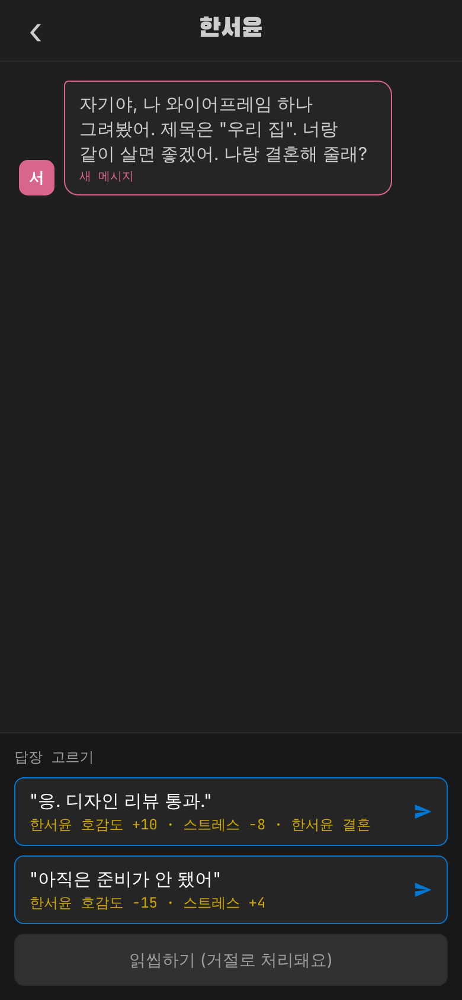
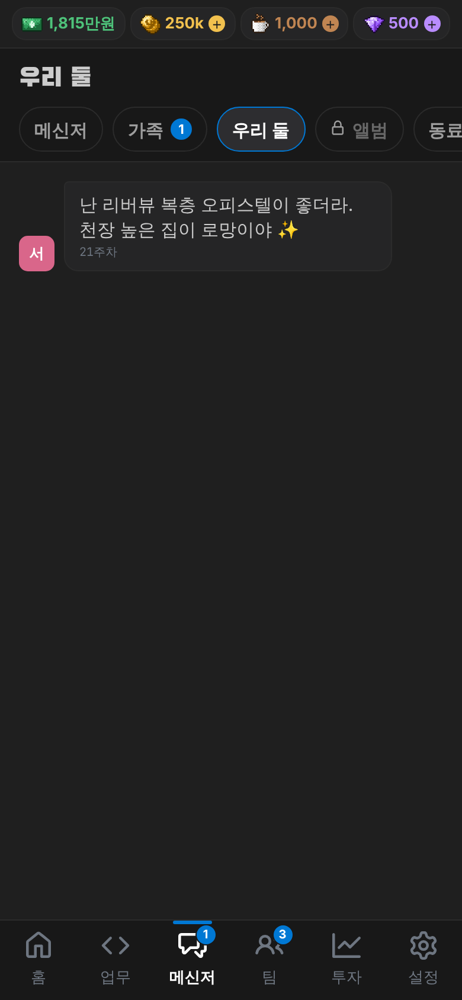

한서윤 공략
같은 팀 UX 디자이너 서윤. 만남부터 결혼·동거·신혼·육아·엔딩 5개까지, 그리고 모든 히로인 공통 규칙
같은 팀 UX 디자이너. 1px 어긋난 걸 20걸음 밖에서 알아보고, 고양이 「픽셀」을 키워요.
- 2주차에 첫 메시지가 와요. 칭호 없이 첫 회사(대기업)에만 있으면 누구나 만나요.
- 매주 오는 메시지에 따뜻한 답(첫 번째 답)을 고르면 썸 47주 → 연애 60주 → 결혼 81주쯤이에요 (데이트 주 3번 기준).
- 절대 하면 안 되는 것: 고백·청혼 거절, 메시지 읽씹(-15), 연애 중 데이트 0번인 주(-30).
- 이 페이지 아래쪽 「모든 히로인 공통 규칙」은 다른 히로인 공략에도 그대로 적용돼요 📌
첫 회차에서 가장 먼저 말을 걸어 오는 히로인이 바로 서윤이에요. 같은 팀이라 업무 얘기로 시작해서, 딸기우유와 고양이 낙서 포스트잇으로 슬금슬금 가까워져요. 특별한 장비도, 칭호도 필요 없어서 첫 결혼 엔딩 연습용으로 딱이에요. 다만 회사 사람이라서 이직하면 끊기는 함정이 있으니 그것만 조심하면 돼요 😉
만나는 조건#
| 항목 | 조건 |
|---|---|
| 회사 | 첫 회사 「대기업 · 주식회사 새벽커밋」 (모든 회차가 여기서 시작해요) |
| 첫 메시지 | 2주차에 「-01」 메시지가 반드시 와요 |
| 시작 호감도 | 10 (회차 보너스 「연애 세포」로 +4 / +7 / +10) |
| 칭호 | 필요 없어요 (아무 칭호나 OK) |
| 끊기는 경우 | 이직·프리랜서·창업 퇴사로 첫 회사를 떠나면, 그때 썸 이상이 아니면 더는 연락이 안 와요 |
서윤과 하린은 「회사 사람」이라서, 첫 회사를 나가는 순간 썸·여자친구·와이프가 아니면 대화방이 멈춰요. 헤드헌터 제안이 와도 서윤을 노리는 회차라면 썸이 된 뒤에 옮기세요.
호감도 올리는 법#
처음 5통 (만남 메시지)#
2주차부터 차례로 와요. 3번째부터는 호감도가 일정 이상이어야 와요. 숫자는 「보이는 값」이고, 실제로는 아래 속도가 곱해져요.
| 메시지 | 오는 조건 | 추천 답 | 호감도 | 대가 |
|---|---|---|---|---|
| 형광 초록 버튼 | 2주~ | "디자인 가이드 다시 보내 주세요 ㅠㅠ" | +4 | 체력 -25, 스트레스 +25, 집중력 -10 |
| 고양이가 키보드를 밟음 | 2주~ | "고양이 사진 보여주세요" | +5 | 체력 -30, 스트레스 +30, 집중력 -15 |
| 로그인 버튼을 못 찾음 | 호감도 15+ | 같이 고쳐 보자고 한다 | +4 | 체력 -30, 스트레스 +30 |
| 편의점 가는데 뭐 필요해요? | 호감도 25+ | "서윤 씨 좋아하는 걸로요" | +4 | 체력 -25, 스트레스 +25, 집중력 -15 |
| 회사 앞 떡볶이집 | 호감도 40+ | 노트북 덮고 따라간다 | +5 | -3만 원, 체력 -30, 스트레스 +30, 코딩력 -10, 성과 -2 |
가운데 답은 모두 +1, 마지막(차가운) 답은 모두 -10이에요. 차가운 답은 코딩력·집중력을 조금 주지만, 연애 회차라면 손해예요.
매주 오는 일상 메시지#
알고 지내는 히로인은 매주 1통씩 꼭 메시지를 보내요. 서윤의 일상 대사는 썸 전 29종·썸 26종·연애 22종·결혼 후 25종이 돌아가며 와요. 답 3개의 효과는 대사 종류로 정해져 있고, 고르는 요령은 늘 같아요: 첫 번째(따뜻한) 답.
- 썸 전: 따뜻한 답 +2, 가벼운 답 +1
- 썸: +3 / +1 · 연애·결혼: +3~4 / +1
- 차가운 답: -3 ~ -8 (대사 종류에 따라)
전체 종류표는 공통 규칙에 있어요.
서윤만의 특별 메시지#
| 메시지 | 언제 | 추천 답 | 호감도 | 대가 / 참고 |
|---|---|---|---|---|
| 1층 카페 신메뉴 | 썸 전·썸, 반복 | "제가 살게요" | +2 | -1만 원, 체력 -20, 스트레스 +20, 집중력 -10 (거절 -8) |
| 생일 🎂 | 썸·연애·결혼 중 1번 | 선물한다 | +8 | -100만 원, 체력 -30, 스트레스 +30 (편지 +2, 까먹었다 -12) |
| 고양이 굿즈 팝업 | 연애·결혼, 반복 | 픽셀 굿즈를 잔뜩 산다 | +2 | -30만 원 (구경만 +1, 거절 -8) |
| 사귄 지 100일 | 연애 | 미리 예약한 레스토랑 | +4 | -50만 원 (거절 -12) |
| 픽셀이 네 후드티에서만 자 | 연애 | 츄르를 사 들고 간다 | +3 | -1.5만 원 (거절 -12) |
| 또 야근이야? | 연애·결혼 | 일을 끊고 퇴근한다 | +3 | 평판 -10, 성과 -3 (거절 -12) |
| 거실 조명이 너무 파래 | 결혼 | "당연하지, 네가 디자이너잖아" | +3 | -50만 원 (거절 -12) |
| 사내 연애 성공 사례 | 결혼 | "사례 발표 해줄까?" | +3 | 평판 +5, 코딩력 -10 (거절 -12) |
생일 선물(+8)은 이 회차에서 1번뿐이고, 썸일 때 받으면 속도 0.17이 곱해져 +1.4밖에 안 돼요. 썸 단계에 생일이 오면 편지(+2)로 아끼고, 돈은 데이트에 쓰는 게 효율적이에요. 연애 이후라면 +8이 그대로 들어가요.
썸 → 고백 → 연애#
- 썸 초대 (호감도 80)「이번 주말에 디자인 전시회 가는데요… 표가 2장이에요.」 아무와도 사귀지 않을 때만 와요. 「좋아요, 저 가도 돼요?」를 고르면 썸이 되고 호감도는 80에서 시작해요. 거절하면 서윤만 떠나요(다른 인연은 그대로).
- 썸 기간호감도가 아주 느리게 올라요(속도 0.17). 데이트를 넣으면 1번에 +2(실제 +0.34)씩 쌓여요. 썸 전용 메시지(새벽 통화 +2, 영화 +3, 머리 잘랐어요 +2)도 와요.
- 고백 (썸 중 호감도 100)「우리… 진짜로 만나 볼래요?」 → 「저도요. 사귀어요, 우리.」 거절하면 떠나고 이번 회차는 새 인연 잠금이에요.
결혼 조건#
| 조건 | 값 |
|---|---|
| 데이트 진도 | 60 (연애 중 데이트 1번 = 1, 회차 보너스 「연애 고수」 +5/10/15%) |
| 호감도 | 100 |
| 청혼 메시지 | 「너랑 같이 살면 좋겠어. 나랑 결혼해 줄래?」 → 「응. 디자인 리뷰 통과.」 (+10) |
| 엔딩 판정 | 100주차에 결혼 중 |
게임 안 엔딩 조건 문구에는 「데이트 진도 20」이라고 나오지만, 실제 코드는 60이에요(20은 아영만). 데이트 주 3번이면 연애 시작 후 20주, 주 6번이면 10주예요.

「아직은 준비가 안 됐어」를 고르거나 읽씹하면 호감도 -15에 청혼이 다시 오지 않아요. 결혼 엔딩이 그 회차에서 사라져요.
데이트 횟수별 타임라인 (실제 엔진 시뮬레이션)#
매주 메시지에 가장 좋은 답을 고르고, 썸·연애 중 데이트를 D번 넣은 경우예요(결혼 후 집안일 주 1번 + 아기가 생기면 육아 주 4번).
| 데이트 | 판 수 | 썸 | 연애 | 결혼 | 100주차 결과 |
|---|---|---|---|---|---|
| 주 1번 | 30 | 47주 | 71주 | — | 청혼이 안 와서 연애 엔딩 100% |
| 주 3번 | 60 | 47주 | 60주 | 81주 | 결혼 엔딩 100%, 아기 0% |
| 주 6번 | 30 | 47주 | 55주 | 65주 | 결혼 100%, 아기 94주쯤, 내조 잘하는 남자 23% |
아기 제안엔 결혼 15주와 집안일 29번이 둘 다 필요해요. 집안일 주 1번이면 결혼하고 29주나 걸려서, 81주에 결혼하면 회차 안에 아기를 못 봐요. 집안일은 하루 칸마다 켤 수 있으니 주 2번이면 15주로 줄어요(1번당 스트레스 +3, 체력 -3). 신혼이면 필요 횟수가 15번으로 절반!
동거 · 신혼 · 육아#
| 단계 | 조건 | 서윤의 경우 |
|---|---|---|
| 🏠 동거 | 연애 중 + 집(원룸 7,000만 원부터)을 산 지 2주 지남 → 동거 제안 | 수락 +5. 이후 서윤 메시지 비용 절반 |
| 💐 신혼 | 결혼 후 15주 안에 그녀의 꿈의 집을 산 지 2주 지남 → 신혼 제안 | 꿈의 집: 리버뷰 시티 「리버뷰 복층 오피스텔」 (기준가 2.7억 원) |
| 🌟 취향 | 신혼 중에 꿈의 집 + 취향 물건 전부 | 미술품(기준 15억 원) + 명품 가방(기준 1,200만 원) |
| 👶 육아 | 결혼 15주 + 집안일 29번(신혼이면 15번) + 넘친 호감도 30 → 아기 제안 | 아기 이름 서준 (아들) |
동거·신혼·앨범·아이 키우기 자세한 규칙은 동거·신혼·앨범·가족 글에 있어요. 서윤은 함께 살게 되면 「우리 둘」 탭에서 「난 리버뷰 복층 오피스텔이 좋더라. 천장 높은 집이 로망이야 ✨」 같은 힌트를 흘려요.

엔딩 전부#
- 조건
- 연애 중 데이트 진도 60 + 호감도 100 → 청혼 수락 → 100주차에 결혼 중
- 도감 보상
- 기본 카드팩 1
- 조건
- 100주차에 서윤과 사귀는 중(미혼)
- 도감 보상
- 기본 카드팩 1
- 조건
- 연애 중 동거 제안 수락 → 회차 끝까지 함께(동거 중이거나 결혼)
- 도감 보상
- 에픽 카드팩 1
- 조건
- 결혼 15주 안에 리버뷰 복층 오피스텔을 사서 신혼 제안 수락 → 100주차에 결혼 중
- 도감 보상
- 에픽 카드팩 1
- 조건
- 신혼 중 꿈의 집 + 미술품 + 명품 가방 → 「나는 이제 모든 걸 가졌어」 → 100주차에 결혼 중
- 도감 보상
- 에픽 카드팩 1
결혼·동거·신혼·취향 엔딩은 100주차에 같이 기록돼요. 동거 → 결혼 → 신혼 → 취향을 한 회차에 몰아 주면 서윤 엔딩 4개가 한 번에 열려요(연애 엔딩만 결혼과 같이 못 받아요). 아이가 대학생까지 크면 아이 엔딩도 함께 와요.
실패 · 이별 조건과 피하는 법#
| 상황 | 결과 | 피하는 법 |
|---|---|---|
| 썸 초대 거절·읽씹 | 서윤만 떠남 | 호감도 80 되는 주에 메시지 꼭 확인 |
| 고백 거절·읽씹 | 떠남 + 이번 회차 새 인연 잠금 | 무조건 수락 |
| 일상 메시지 읽씹 | 호감도 -15 (「알림 모두 지우기」도 읽씹) | 매주 답하기 |
| 연애 중 데이트 0번인 주 | -30 + 「서운해」 메시지 | 매주 데이트 1번 이상 |
| 주말 칸에 업무 | -2 「주말에도 일해?」 | 주말은 휴식·데이트 |
| 여자친구 호감도 0 | 「헤어지자」 → 붙잡기 30% (-50만 원) | 넘친 호감도를 쌓아 두기 |
| 결혼 후 집안일 0번인 주 | -30, 0이 되면 이혼 메시지(붙잡기 30%, -100만 원) | 매주 집안일 1번 |
| 썸 2명 이상 | 매주 어장 들킬 확률(2명 5%) | 목표 1명만 썸 |
추천 공략 루트 (주차별 체크리스트)#
- 1회차 시작 전여유 있으면 회차 보너스 「연애 세포」(시작 호감도 +4~10)와 「연애 고수」(데이트 진도 +5~15%). 장비 「시그니처 향수」(+5%)·「픽업 아티스트의 노트」(+10%)도 연애 속도를 올려요.
- 2~6주만남 메시지 01·02에 첫 번째 답. 이후 매주 일상 메시지에 따뜻한 답.
- ~47주호감도 80 → 썸 초대 수락. 다른 히로인 썸 초대는 거절(그녀만 떠나고 잠금 없음).
- 썸 기간주 3번 이상 데이트. 이 시기에 원룸(7,000만 원)을 사 두면 연애 다음 주에 동거 제안이 와요.
- ~60주고백 수락 → 매주 데이트(주 3번이면 20주, 6번이면 10주 만에 진도 60).
- ~81주청혼 수락. 리버뷰 복층 오피스텔은 늦어도 결혼 13주차까지 구입(산 지 2주가 지나야 제안이 오고, 결혼 15주가 넘으면 안 와요) → 신혼 제안 수락.
- 결혼 후매주 집안일 1번 이상. 아기 제안은 신혼 15주가 끝난 뒤에 와요.

자주 묻는 질문#
- 답에 「호감도 +4」라고 써 있는데 왜 1.3밖에 안 올라요?
- 썸 전(호감도 20부터)엔 서윤 속도 0.66, 썸 중엔 0.17이 곱해지고, 썸 전 일상 대사는 +2가 상한이라서예요. 메신저에 보이는 「실제 호감도」 숫자가 진짜 오르는 값이에요.
- 썸 전에 호감도가 80에서 멈췄어요.
- 정상이에요. 썸 전 호감도는 80까지만 오르고, 80이 되면 썸 초대가 와요. 아무와도 사귀지 않을 때만 오니, 다른 히로인과 연애 중이면 안 와요.
- 프리랜서로 전향하거나 이직하면 서윤은 어떻게 돼요?
- 그때 썸·여자친구·와이프면 계속 연락이 와요. 그 전 단계라면 첫 회사를 떠나는 순간부터 서윤 메시지가 오지 않아요(모든 회차는 첫 회사에서 시작하니 처음부터 못 만나는 일은 없어요).
- 서윤이랑 하린을 동시에 썸 타도 되나요?
- 돼요. 다만 썸 2명이면 매주 5%로 어장이 들키고, 들키면 둘 다 떠나고 평판 0 고정에 새 인연도 잠겨요. 둘 중 먼저 호감도 100에 닿은 사람이 먼저 고백하고, 한 명과 사귀면 다른 썸은 조용히 끝나요.
📌 모든 히로인 공통 규칙#
보이는 호감도 × 단계 속도 = 실제 호감도. 썸 전엔 80에서 멈추고, 연애 이후 100을 넘는 건 「넘친 호감도」로 쌓여요.
호감도 속도#
| 히로인 | 시작 | 첫 메시지 | 썸 전 속도(20부터) | 썸 속도 | 청혼 진도 |
|---|---|---|---|---|---|
| 서윤 | 10 | 2주 | 0.66 | 0.17 | 60 |
| 하린 | 5 | 3주 | 0.72 | 0.17 | 60 |
| 다은 | 10 | 4주 | 0.69 | 0.17 | 60 |
| 민지 | 5 | 5주 | 0.73 | 0.17 | 60 |
| 아영 | 0 | 헬스장 | 1 | 0.3 | 20 |
| 혜윤 | 15 | 6주 | 0.60 | 0.18 | 60 |
| 은서 | 20 | 칭호 | 0.74 | 0.17 | 60 |
- 연애·결혼 중엔 속도 1(보이는 값 그대로). 깎이는 값에는 속도가 곱해지지 않아요.
- 단계를 바꾸는 답(썸 +5, 연애 +5, 결혼 +10)은 그대로 들어가요. 썸은 늘 호감도 80에서 시작해요.
- 장비 보너스: 시그니처 향수 +5%, 픽업 아티스트의 노트 +10% (오를 때만).
일상 대사 답 종류표#
히로인 일상 대사는 종류별로 답 효과가 고정이에요. 표의 호감도는 단계 상한(썸 전 +2, 썸 +3, 연애·결혼 +4) 적용 전 값이에요. 그리고 +3 미만인 증가(표의 +2)는 어느 단계든 +1로 들어가요.
| 종류 | 첫 번째 답 | 두 번째 답 | 세 번째 답 |
|---|---|---|---|
| 데이트 | +4, -5만 원, 스트레스 -3 | +2, -1.5만 원 | -6, 집중력 +3 |
| 챙겨 주기 | +4, 체력 -10, 스트레스 +5 | +2, 집중력 -3 | -6, 코딩력 +3 |
| 수다 | +3, 집중력 -3, 스트레스 -3 | +1 | -5, 집중력 +3 |
| 걱정 | +5, 체력 -10, 스트레스 +5 | +2 | -8, 집중력 +3 |
| 선물 | +5, -8만 원 | +2, 스트레스 -2 | -5 |
| 작은 선물 | +4, -2만 원 | +2, 스트레스 -2 | -4 |
| 내기 🎲 | 성공 50%: +5, +3만 원 / 실패: +1, -3만 원, 스트레스 +3 | +1 | -5, 집중력 +3 |
| 돈 안 드는 내기 🎲 | 성공 50%: +5 / 실패: +1, 스트레스 +3 | +1 | -4, 집중력 +2 |
| 도전 🎲 | 성공 60%: +5, 스트레스 -4 / 실패: +2(실제 +1), 체력 -10, 스트레스 +4 | +2, 체력 -5 | -5, 체력 +3 |
| 무료 나들이·즐거운 챙김 | +4, 체력 -5, 스트레스 -3 | +2 (나들이 스트레스 -1 / 챙김 체력 -2) | -5 (나들이 집중력 +3 / 챙김 체력 +3) |
| 부드러운 수다 | +3, 집중력 -3, 스트레스 -3 | +1 | -3, 집중력 +2 |
매주 지켜야 할 것#
| 규칙 | 값 |
|---|---|
| 메시지 읽씹 (다음 주 마감까지 답 안 함) | -15 |
| 데이트 1번 (썸·연애) | +2 (단계 속도 적용), 스트레스 -8, -5만 원 |
| 연애 중 데이트 0번인 주 | -30 |
| 결혼 후 집안일 0번 / 아이 있을 때 육아 0번인 주 | 각각 -30 |
| 집안일 1번 | 스트레스 +3, 체력 -3 |
| 주말에 업무 | 여자친구·아내 -2 |
| 어장(썸 2명 이상) 들킬 확률 | 2명 5%, 3명 8%, 이후 1명마다 +5% (양심의 가책: 3명까지 1%, 이후 +0.5%) |
넘친 호감도 효과#
| 효과 | 조건 | 내용 |
|---|---|---|
| 설렘 | 연애·결혼 + 넘친 30 | 매주 스트레스 -5 |
| 든든한 내 편 | 넘친 50 | 매주 스트레스 -5, 집중력 +10 |
| 맞벌이 · 집밥 | 결혼 + 넘친 70 | 주급 +50% · 매주 체력 +10 |
| 번아웃 방패 · 기념일 여행 | 결혼 + 넘친 80 | 번아웃 1번 막기 · 13주마다 스트레스 -20 |
| 가정적인 개발자 | 육아 + 넘친 100 | 매주 평판 +3, 인사평가 +3 |
넘친 호감도는 깎일 때 먼저 빠지는 쿠션이에요. 넉넉히 쌓아 두면 데이트를 한 주 빼먹어도 호감도 100이 유지돼요.